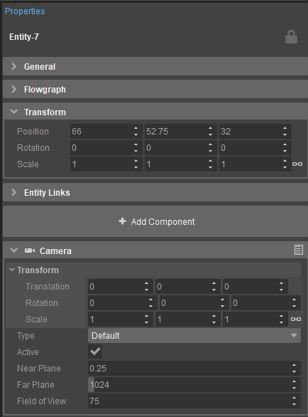
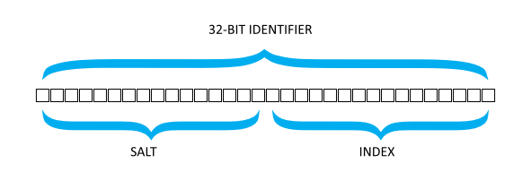

Обзор
Сущности представляют собой элементы мира, которые могут двигаться, действовать и вести себя логично в мире, в отличие от камня, который не меняется со временем. Сущности сами по себе не содержат логики, но могут содержать Компоненты — фрагменты кода, созданные пользователем, которые могут манипулировать своим родительским объектом во время выполнения. Примеры включают источники света, физические объекты (например, пули) и игроков.
Сущности ранее были известны как игровые объекты, а компоненты сущностей назывались «расширениями игровых объектов».
Компоненты
Сами сущности не могут содержать пользовательскую логику. Вместо этого они могут содержать Компоненты. Например, компонент «Камера» может быть прикреплен к объекту, предоставляя функциональные возможности для рендеринга определенной точки обзора на уровне:

Сущности хранятся и управляются в Система сущностей, представленный IEntitySystem интерфейс и доступен через gEnv->pEntitySystem. Система отвечает за создание, управление сущностями на протяжении всей их жизни и, наконец, их удаление. См. IEntitySystem::SpawnEntity для примера того, как создавать сущности.
Идентификаторы
После появления каждой сущности присваивается сущность идентификатор, представленный EntityId определение типа. Идентификаторы объектов являются 32-битными и состоят из двух частей: 16-битного идентификатора. соль, используемый для облегчения повторного использования каждого индекса без повторного использования идентификаторов объектов в течение всего срока службы приложения, а также 16-битный индекс, представляющий позиция объекта во внутреннем хранилище системы объекта. Это позволяет извлекать объект в постоянное время, поскольку мы можем просто искать объект по индексу в непрерывном хранилище.

Это означает, что, несмотря на то, что это 32-битное целое число unsigned, индекс составляет всего 16 бит, что приводит к максимальному пределу в 65 533 объекта в мире в любой момент времени. (0 и 65534+ зарезервированы). Любая игра, которая, как ожидается, превысит это число, должна будет транслировать логические объекты, используя специальную настройку, адаптированную для проекта.
Глобальный уникальный идентификатор
Сущностям также присваиваются глобальные уникальные идентификаторы, отмеченные EntityGUID определение типа. Эти идентификаторы отличаются от идентификаторов объектов тем, что они гарантированно будут одинаковыми при сохранении и загрузке объектов, что позволяет редактору и другим системам отслеживать, какой объект кому принадлежит.
EntityIdэто нет уникальный для всех сеансов или в сети. Один и тот же объект в многопользовательском матче, скорее всего, будет иметь разные идентификаторы на двух клиентах.
Многопользовательский аспект этого относится к EntityGUIDа также — см. раздел «Сеть сущностей», чтобы узнать, как можно идентифицировать сущности в сети.
Преобразование и родительская/дочерняя иерархия
Сущности в CRYENGINE имеют трансформировать по умолчанию, то есть у них есть местоположение, ориентация и масштаб по отношению к своим родитель (а если нет родителя, то мир). Мы можем получить трансформацию мира с помощью следующих функций:
Точно так же мы можем легко изменить трансформацию мира, используя
Иерархия
Сущности могут быть связанный вместе в иерархии, гарантируя, что положение объекта относительно родительского. Это полезно для объединения сущностей в отношения родитель/потомок, где дочерний объект всегда должен следовать за своим родителем.
Сущность может быть связана с родительским объектом по адресу время появления, или в любой момент во время в течение жизни экземпляра.
После связывания мы можем получить преобразование локального пространства (относительно родительского объекта) объекта с помощью следующих функций:
Локальное преобразование можно изменить с помощью
Слоты/Геометрия объекта
Для получения дополнительной информации см. Слоты, геометрия и эффекты.
Заключение
На этом статья о сущностях завершается. Вас также может заинтересовать: